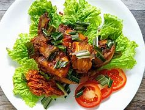
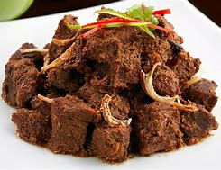
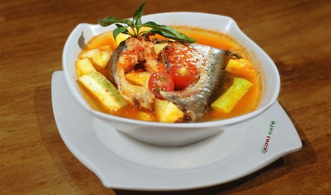

berbagai macam makanan khas dari indonesia
beserta resepnya
Kuliner tradisional Indonesia adalah ragam jenis masakan yang berasal dari berbagai daerah di seluruh Negara Kesatuan Republik Indonesia. Resep dan serta proses pembuatan kuliner tradisional menjadi pengetahuan yang bersifat turun-temurun antar generasi. Masing-masing kuliner tradisional memiliki ciri khas yang berbeda dengan daerah lainnya
indonesia memiliki berbagai ras, suku, agama, dan, daerah, tentu saja setiap daerah memiliki berbagai jenis makanan khas yang dimiliki,jadi web ini akan menjelaskan beberapa contoh-contoh makanan khas yang berada di indonesia
pecel
.jpg)
makanan yang terdiri atas sayuran rebus, seperti kacang panjang, bayam, taoge yang disiram dengan kuah sambal kacang dan sebagainya. Pecel merupakan penganan khas suku Jawa yang berasal dari Daerah Istimewa Yogyakarta dan sudah ada sejak abad ke-9 masehi
Ayam tangkap
Dikenal dengan nama ayam tangkap khas Aceh. Hidangan ini dibuat dari ayam kampung yang segar. Direndam bumbu sederhana dan selalu digoreng saat akan dinikmati. Aroma harum daun kari dan pandan menambah nikmat ayam tangkap khas Aceh ini.
Rendang
adalah hidangan berbahan dasar daging yang dihasilkan dari proses memasak suhu rendah dalam waktu lama dengan menggunakan aneka rempah-rempah dan santan. Proses memasaknya memakan waktu berjam-jam (biasanya sekitar empat jam) hingga yang tinggal hanyalah potongan daging berwarna hitam pekat dan dedak. Dalam suhu ruangan, rendang dapat bertahan hingga berminggu-minggu. Rendang yang dimasak dalam waktu yang lebih singkat dan santannya belum mengering disebut kalio, berwarna cokelat terang keemasan.
pindang patin
Pindang patin adalah makanan khas Palembang bercita rasa Nusantara yang berbahan dasar ikan patin lezat dengan kombinasi rasa pedas, asam, dan gurih. Siapapun yang mencium aromanya pasti akan auto lapar. Dan siapapun yang pernah mencicipinya, pasti ingin nambah lagi.